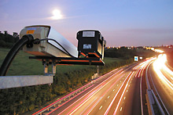

13,5 тысяч нарушений ПДД выявили камеры видеофиксации
13 с половиной тысяч нарушений Правил дорожного движения выявили в этом году 6 комплексов автоматической видеофиксации, установленные в Тюмени на опасных улицах и перекрестках. Самое распространенное нарушение — превышение скоростного режима, чаще всего водители превышают скорость на улицах Федюнинского, 11, где установлены камеры и на Мельникайте, 116.
Два водителя превысили скорость более чем на 60 километров в час, 906 проехали перекрестки на красный сигнал светофора. Как говорит Евгений Уткин, начальник Центра автоматизированной фиксации административных правонарушений в области дорожного движения ГИБДД УВД по г.Тюмени — нарушают как водители скоростных иномарок, так и владельцы малолитражек. Сумма наложенных за нарушения штрафов с начала года составила 2,3 миллиона рублей. На действия камер автоматической видеофиксации поступило 35 жалоб от тюменских автовладельцев, все они не оспаривают сам факт нарушения, а утверждают, что за рулем автомобиля в момент нарушения находился другой водитель. Каждый факт рассматривается отдельно: в случае, если удается установить, что нарушил за рулем действительно не собственник авто, делопроизводство в отношении него прекращается, а к ответственности привлекается фактический нарушитель. В любом случае, движение под прицелом камер видеофиксации нарушений стало безопаснее, очагов аварийности в местах установки камер больше нет.